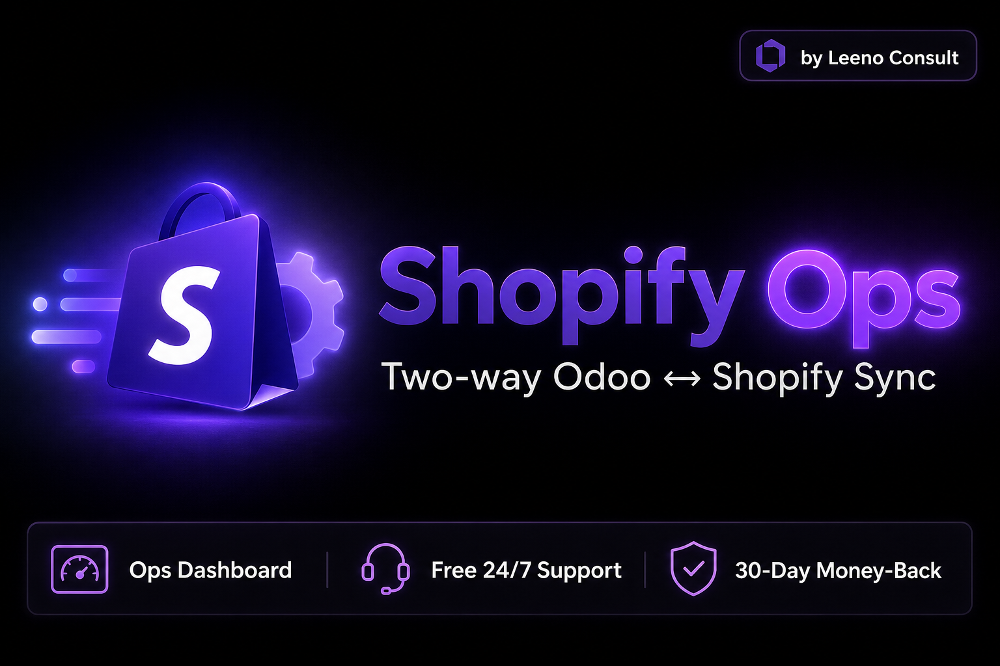
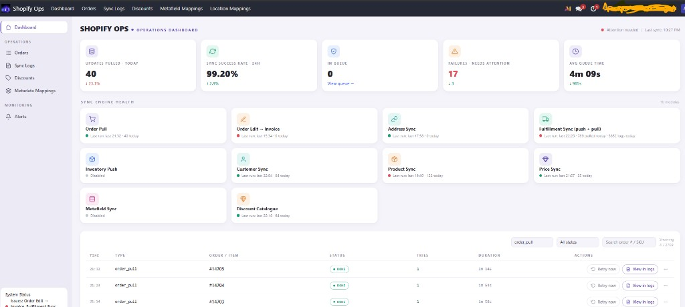

Standalone two-way Odoo ↔ Shopify sync with a modern operations dashboard. Track failures, retry jobs, and keep orders, stock, and fulfillments under control.
$550 USD one-time
Free 24/7 WhatsApp / call · Free Odoo version upgrades · 30-day money-back guarantee · 2-way with optional 1-way flows

Leeno Consult — message before you buy for a fit-check. Stuck at 2am? We’re on WhatsApp.
Not the right fit? Contact us within 30 days for a full refund — zero risk to try Shopify Ops on your stack.
Most connectors hide failures until a customer complains. Shopify Ops gives you a live command center: success rate, queue depth, engines that are on/off, and one-click retry. No third-party companion required — it stands alone.
| Modern dashboard KPIs, sync-engine health, activity log with Retry now / View in logs. | True 2-way control Two-way sync by default, with options to keep specific flows or orders one-way. | Support that answers Free 24/7 WhatsApp / call. Free Odoo version upgrades. 30-day money-back. |
One-time purchase by Leeno Consult. Free Odoo version upgrades. 30-day money-back guarantee.
WhatsApp before you buy: wa.me/27686661814
Is this two-way?
Yes — with options to make specific flows or orders one-way when your process needs it.
Do I need another Shopify connector?
No. Shopify Ops is a standalone module — order pull, edits, inventory, fulfillment, catalog, and the ops dashboard are included.
Can I track issues?
Yes. The modern dashboard shows failures needing attention, engine health, and an activity log with Retry now.
Is there a money-back guarantee?
Yes — 30-day money-back guarantee. Contact Leeno Consult within 30 days if it isn’t the right fit.
Are Odoo upgrades free?
Yes. Free Odoo version upgrades are included with your purchase.
How do I get support?
Free 24/7 support from Leeno Consult via WhatsApp or call at +27 68 666 1814.
Where does it install?
Odoo.sh and self-hosted Odoo. Odoo Online (SaaS) does not allow custom modules.